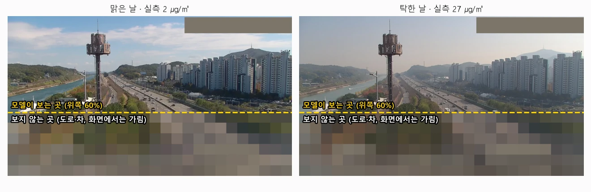
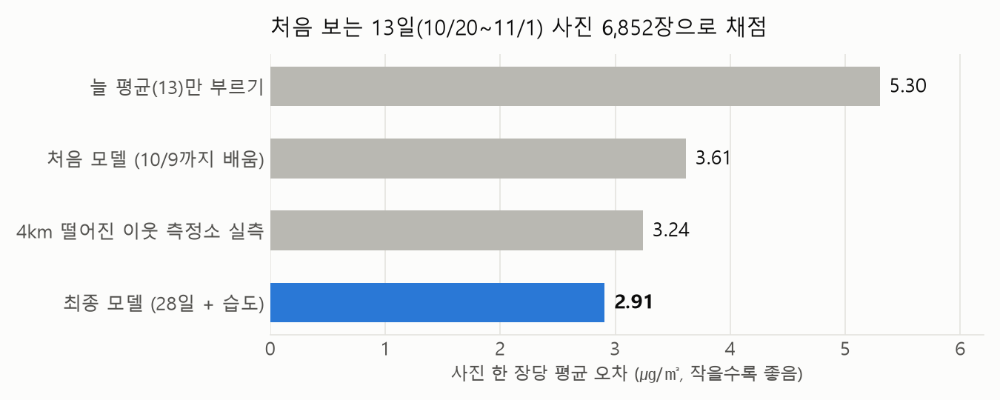
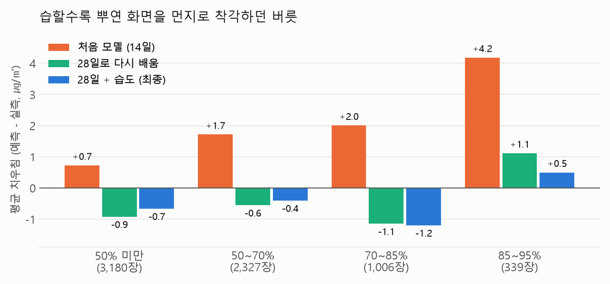
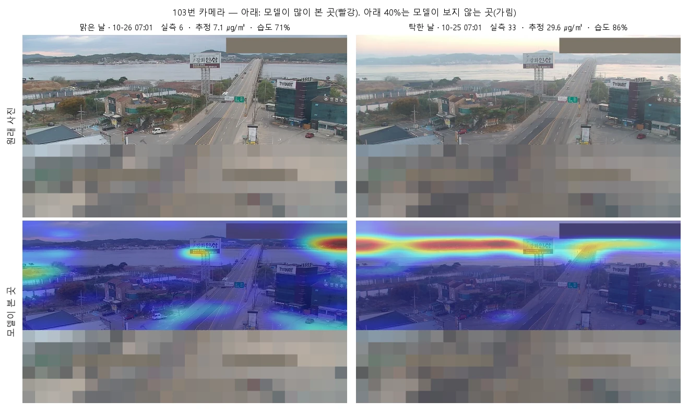

사진에서 농도까지
도로 CCTV로 초미세먼지를 읽을 수 있을까?
이 프로젝트의 "미세먼지"는 넓은 뜻이고, 실제로 추정하는 것은 그중 초미세먼지(PM2.5)입니다.
01 질문
초미세먼지(PM2.5) 측정소는 동네마다 있지 않습니다. 반면 도로 CCTV는 도시 곳곳에 있고, 지금도 영상을 보내고 있습니다. 이미 있는 CCTV 사진만으로 그 자리의 초미세먼지 농도를 읽어 낼 수 있을까요?
02 가설
공기 중에 먼지가 많으면 빛이 먼지에 부딪혀 흩어집니다. 그래서 먼 건물과 산일수록 뿌옇고 흐리게 보입니다. 사진에서 먼 곳이 얼마나 흐린지를 보면 농도를 짐작할 수 있다는 것이 우리의 가설입니다.
03 데이터
- 사진: 인천 도로 CCTV 20대, 20분마다 1장, 해가 떠 있을 때만 (2026-09-21부터 수집 중)
- 정답: 카메라에서 가장 가까운 에어코리아 측정소(0.4~4km)의 1시간 평균 PM2.5
- 날씨: 기상청 1분 습도·강수량
- 뺀 사진: 비 오는 사진, 습도 95% 이상(짙은 안개·물방울), 카메라가 돌아가 화면이 바뀐 사진
- 나눈 방법: 9/22~10/19(28일, 15,721장)로 배우고, 모델이 한 번도 보지 않은 10/20~11/1(13일, 6,852장)으로 채점했습니다. 후보를 고르는 것은 배우는 기간 안의 연습시험으로 하고, 채점 기간은 고른 뒤에만 열었습니다
04 방법

- 사진의 위쪽 60%만 봅니다. 아래쪽은 도로와 차라서, 먼지와 상관없이 매번 바뀝니다. 사람이 카메라마다 그린 상자(하늘, 먼 건물·산)와 사진 전체도 비교했는데, 아래 40%만 잘라 낸 쪽이 가장 잘 맞혔습니다(차이는 작습니다)
- 사진 인식 모델을 다시 가르칩니다. 수많은 사진으로 미리 배운 이미지 모델(ConvNeXt V2-Tiny)에 우리 CCTV 사진과 정답을 보여 주며, "이렇게 보이면 몇 ㎍/㎥"를 배우게 했습니다
- 습도를 함께 알려 줍니다. 습한 날에는 공기 중 물방울 때문에 먼지가 적어도 화면이 뿌옇습니다. 모델에 습도 숫자 하나를 같이 넣어, "습해서 뿌연 몫"을 스스로 덜어 내게 했습니다
- 화면 위 시각·지명 글자는 모델이 보지 못하게 가립니다
05 결과

- 처음 보는 13일 동안, 사진 한 장당 평균 2.91 ㎍/㎥ 차이로 맞혔습니다. 늘 평균만 부르면 5.30입니다
- 같은 시각에 4km 떨어진 다른 측정소의 실측값을 그대로 답으로 내도 3.24 차이가 납니다. CCTV 추정이 가까운 실제 측정기만큼, 또는 그보다 가깝게 맞힌 셈입니다

- 처음 모델은 습할수록 높게 불렀습니다(습도 85~95%에서 평균 +4.2). 뿌연 화면을 먼지로 착각한 것입니다
- 더 많은 날(28일)을 배우자 이 버릇이 크게 줄었고, 습도를 함께 넣자 가장 습한 구간에서 한 번 더 줄었습니다(+1.1 → +0.5)

- 탁한 날, 모델은 지평선과 먼 건물을 봅니다. 가설(먼 곳의 흐림)과 같은 곳입니다
- 맑은 날에는 시선이 흩어집니다. 이 그림은 사진마다 가장 많이 본 곳을 빨강으로 맞추기 때문에, 단서가 약한 맑은 날은 여기저기 옅게 칠해집니다

실측 대조 그림 준비 중
06 한계
- 정답도 흔들립니다. 정답은 측정소 한 지점의 1시간 평균이고, 사진은 한 순간에 수 km 시선 전체를 봅니다. 서로 2.6~5km 떨어진 측정소끼리도 같은 시각 값이 평균 3.1 다릅니다
- 탁한 날을 낮게 부릅니다. 실측 25 이상인 날은 평균 5 넘게 낮게 불렀습니다. 배운 4주(9/22~10/19)에 탁한 날이 적어 충분히 배우지 못한 것으로 봅니다. 겨울 자료가 쌓이면 다시 확인할 계획입니다
- 밤, 비, 아주 습한 날(95% 이상)에는 추정하지 않습니다. 이때 지도는 측정소 실측으로 채웁니다
- 카메라마다 눈금이 다릅니다. 같은 농도도 카메라의 위치·방향·렌즈에 따라 다르게 보여, 새 카메라는 그 카메라의 사진을 배워야 합니다
- 지도의 값은 우리가 계산한 추정값이며 공식 측정값이 아닙니다